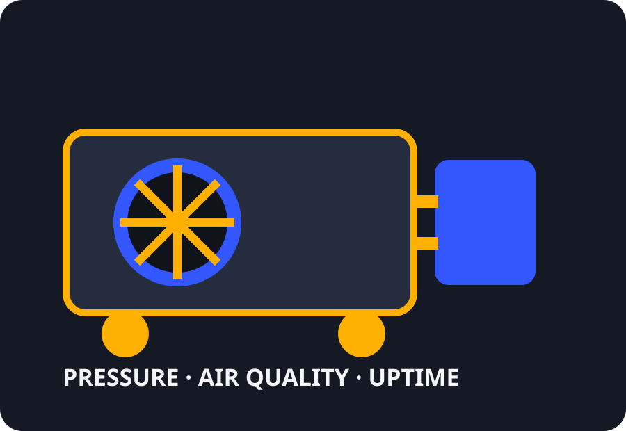

Compressor sales & installation
Clear service information, focused calls to action and a route that captures the details your team needs.
COMPRESSED AIR · VACUUM · NITROGEN
A direct, technical route for urgent faults, planned servicing, new systems, pipework, air treatment and equipment sales.

Capabilities
Clear service information, focused calls to action and a route that captures the details your team needs.
Clear service information, focused calls to action and a route that captures the details your team needs.
Clear service information, focused calls to action and a route that captures the details your team needs.
Clear service information, focused calls to action and a route that captures the details your team needs.
Clear service information, focused calls to action and a route that captures the details your team needs.
Enquiry workflow
Urgent, planned, new project, compliance or maintenance enquiries enter the correct path.
Asset, site, programme and operational details reduce avoidable back-and-forth.
A connected CRM can assign the lead, acknowledge it automatically and track the next action.
Structured enquiry
This concept demonstrates how the website can qualify the enquiry before a survey, quotation or engineer call.
No patient, confidential or safety-critical operational data should be submitted through this public demo.